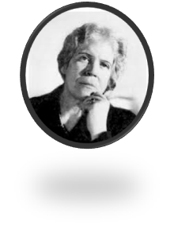

11. 2. 1884 – 3. 3. 1957
Pocházela z významné šlechtické rodiny, její děd byl předseda vlády, dědeček z matčiny strany ministr kultury
Byla 2x vdaná, druhý manžel byl český malíř Oskar Brázda, který byl tajemníkem Milana Rastislava Štefánika – Amelie proto stála také u zrodu ČSR v roce 1918
Oskar Brázda koupil zámek Líčkov, který se stal centrem československé inteligence
Amelie střídavě žila na Líčkově, který byla však donucena opustit a utéci – nejprve před nacisty, později před komunisty zpět do Švédska
Díky svému altruismu a svým známostem mezi evropskou špičkou dokázala během svého života zachránit tisíce lidí, pronásledovaných nacisty i komunisty
